I test effect estimates against known answers, then compare spending rules at the same budget in simulated markets held out from training.
Follow the question. Examine the evidence.
My research in economics and quantitative finance, with the method, finding, and supporting results together.
Question
Who should get the offer?
Result0.0417known-truth HTE RMSE
The complex targeting model has not earned its advantage. The learner misses the recovery benchmark. In the budget experiment, a uniform allocation also produces more incremental trips than the model-based rule.
Semi-synthetic validation, not a measured effect of a real NYC promotion. The oracle knows the true average effect; it is a test benchmark, not a deployable policy.
The model misses the simple benchmark
Effect-estimation error · lower is better
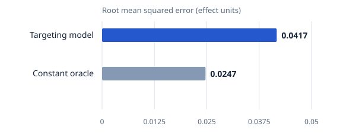
What this shows. The targeting model has more error than a constant benchmark that knows the true average effect. This test does not support a claim that the model reliably identifies who benefits more.
View exact values & source
| Estimator | RMSE |
|---|---|
| Targeting model | 0.0417 |
| Constant oracle | 0.0247 |
Source: CasualLab/artifacts/benchmarks/heterogeneity/hte_recovery.json
Download figure (SVG)
Equal budgets, no targeting advantage
Incremental trips · eight held-out simulated markets
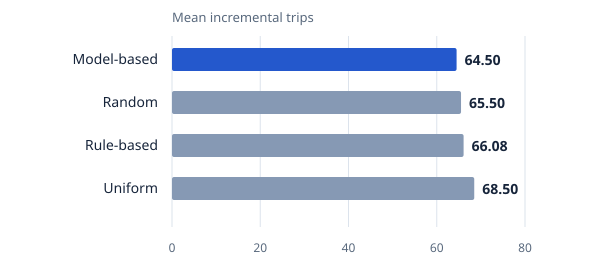
What this shows. With a budget of 1,000 in each market, the model-based policy averages 64.50 extra trips versus 68.50 for uniform allocation. These are simulated policy outcomes, not field-experiment estimates.
View exact values & source
| Allocation rule | Mean incremental trips |
|---|---|
| Model-based | 64.49589085777113 |
| Random | 65.5022313812971 |
| Rule-based | 66.08454126083961 |
| Uniform | 68.49668956342123 |
Source: CasualLab/artifacts/benchmarks/policy_results.csv
Download figure (SVG)
Hindsight enters through two doors
7,985 feature cells audited under each rule
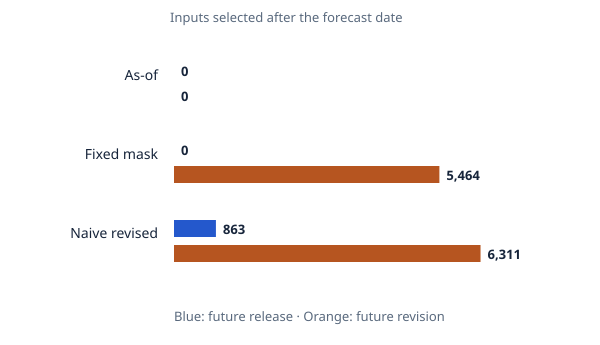
What this shows. Strict as-of uses only information known at the time. Fixed mask keeps the original release availability but imports 5,464 later revisions. Unrestricted latest values also introduce 863 future releases. The two counts can overlap; do not add them.
View exact values & source
| Information rule | Future-release cells | Future-revision cells |
|---|---|---|
| As-of | 0 | 0 |
| Fixed mask | 0 | 5464 |
| Naive revised | 863 | 6311 |
Source: Macroeconomics/data/generated/official_pilot/feature_leakage_audit.parquet
Download figure (SVG)
All six GDP models change rank
Same availability; different data revisions · 8 final holdout forecasts · horizon 0
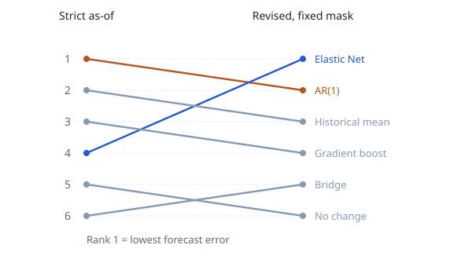
What this shows. In the final GDP holdout, Elastic Net moves from fourth to first when later revisions replace the original values. AR(1) moves from first to second. Both predictor values and scoring targets are revised, while release availability stays fixed. Eight forecasts (July 2024–April 2026) are too few to establish general model superiority.
View exact values & source
| Model | Strict as-of rank | Revised fixed-mask rank |
|---|---|---|
| AR(1) | 1 | 2 |
| Bridge | 6 | 5 |
| Elastic Net | 4 | 1 |
| Gradient boost | 3 | 4 |
| Historical mean | 2 | 3 |
| No change | 5 | 6 |
Source: Macroeconomics/data/generated/official_pilot/model_stability.parquet
Download figure (SVG)
The adjusted association remains negative
Complementary log-log model · estimation sample, 2021–2023

What this shows. A one-percentage-point larger rate gap is associated with an 18.3% lower conditional hazard in this model (1 − 0.817). This is a relative association, not an 18.3-point fall in monthly probability. No confidence interval is displayed; this is not a causal estimate.
View exact values & source
| Model | Rate-gap coefficient | Hazard ratio | Loan-months |
|---|---|---|---|
| Complementary log-log | -0.2018 | 0.817 | 3808045 |
Source: RealEstate/reports/loan_hazard_analysis.md
Download figure (SVG)The sample shows the broad rate-gap pattern
Unweighted estimation sample · 2021–2023
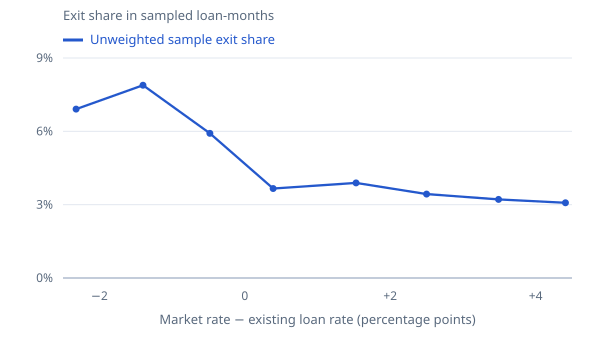
What this shows. Each point is a rate-gap group, placed at its mean gap. The sample overrepresents loans that exit; these unweighted shares are not population monthly probabilities. The downward pattern has reversals and differs from the adjusted model above.
View exact values & source
| Rate-gap group | Mean gap (pp) | Unweighted sample exit share (%) | Loan-months |
|---|---|---|---|
| < −200 bp | -2.32 | 6.909 | 120158 |
| −200 to −100 | -1.4 | 7.886 | 654515 |
| −100 to 0 | -0.48 | 5.918 | 991436 |
| 0 to +100 | 0.39 | 3.66 | 650129 |
| +100 to +200 | 1.53 | 3.89 | 370268 |
| +200 to +300 | 2.5 | 3.433 | 498736 |
| +300 to +400 | 3.49 | 3.215 | 518394 |
| > +400 bp | 4.41 | 3.077 | 208188 |
Source: RealEstate/reports/loan_hazard_analysis.md
Download figure (SVG)
Duty-inclusive costs rise; pre-duty values barely move
Average post-tariff effect across three sample windows
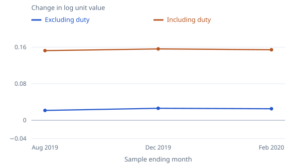
What this shows. The pre-duty effect stays close to +0.025 log points in all windows, rather than showing a large supplier-side price cut. Duty-inclusive effects stay near +0.15. Unit values are imperfect price proxies.
View exact values & source
| Window | Excluding duty (log points) | Including duty (log points) |
|---|---|---|
| Pre-4A | 0.021639 | 0.152483 |
| End 2019 | 0.026291 | 0.156235 |
| Full | 0.025288 | 0.154435 |
Source: TariffIncidence/data/results/window_sensitivity.json
Download figure (SVG)
The divergence appears after the tariff
Stacked event study · never-treated products as controls
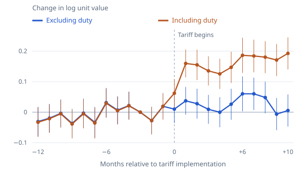
What this shows. Thin vertical lines show reported 95% intervals. The omitted reference month is −3. Pre-duty values show no sustained offsetting decline; duty-inclusive values rise after treatment. This figure uses the report’s rounded estimates.
View exact values & source
| Event month | Excluding duty | CI low | CI high | Including duty | CI low | CI high |
|---|---|---|---|---|---|---|
| -12 | -0.0307 | -0.079 | 0.0176 | -0.033 | -0.0814 | 0.0153 |
| -11 | -0.0196 | -0.0663 | 0.0272 | -0.0213 | -0.0681 | 0.0254 |
| -10 | -0.0038 | -0.0492 | 0.0415 | -0.0053 | -0.0508 | 0.0401 |
| -9 | -0.0367 | -0.0841 | 0.0107 | -0.0387 | -0.086 | 0.0087 |
| -8 | -0.0032 | -0.0509 | 0.0445 | -0.0052 | -0.0529 | 0.0426 |
| -7 | -0.0333 | -0.0838 | 0.0172 | -0.0355 | -0.0861 | 0.015 |
| -6 | 0.0313 | -0.0167 | 0.0793 | 0.0294 | -0.0187 | 0.0775 |
| -5 | 0.0068 | -0.0386 | 0.0523 | 0.0049 | -0.0406 | 0.0503 |
| -4 | 0.0217 | -0.024 | 0.0673 | 0.0209 | -0.0248 | 0.0665 |
| -3 | 0.0 | 0.0 | 0.0 | 0.0 | 0.0 | 0.0 |
| -2 | -0.0275 | -0.0724 | 0.0174 | -0.0276 | -0.0725 | 0.0173 |
| -1 | 0.0193 | -0.0238 | 0.0624 | 0.019 | -0.0241 | 0.0621 |
| 0 | 0.01 | -0.0357 | 0.0558 | 0.0621 | 0.0158 | 0.1083 |
| 1 | 0.0372 | -0.0083 | 0.0828 | 0.1597 | 0.1142 | 0.2052 |
| 2 | 0.0279 | -0.0211 | 0.0769 | 0.155 | 0.1052 | 0.2048 |
| 3 | 0.0093 | -0.0381 | 0.0567 | 0.1353 | 0.0873 | 0.1833 |
| 4 | -0.0001 | -0.0494 | 0.0492 | 0.1255 | 0.0759 | 0.1751 |
| 5 | 0.0261 | -0.0247 | 0.0769 | 0.1469 | 0.0958 | 0.1981 |
| 6 | 0.0602 | 0.003 | 0.1174 | 0.1863 | 0.1286 | 0.244 |
| 7 | 0.0602 | 0.0073 | 0.113 | 0.1842 | 0.131 | 0.2375 |
| 8 | 0.0481 | -0.0037 | 0.1 | 0.1803 | 0.1279 | 0.2327 |
| 9 | -0.0064 | -0.0591 | 0.0463 | 0.1709 | 0.1181 | 0.2237 |
| 10 | 0.0055 | -0.0472 | 0.0583 | 0.1926 | 0.14 | 0.2452 |
Source: TariffIncidence/reports/tariff_incidence_results.md
Download figure (SVG)
Gross edge across 144 scenarios
Each dot is one fee-and-latency scenario · dashed line marks the fixed 4 bp fee
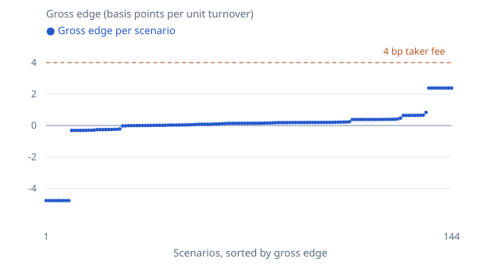
What this shows. Each dot is one scenario’s gross edge per unit of turnover, sorted from lowest to highest; 110 of 144 are above zero and the best reaches 2.39 bp. The dashed line marks the fixed 4 bp taker fee. Overlapping scenarios must not be summed.
View exact values & source
| Symbol | Phase | Horizon | Decision delay (events) | Order delay (events) | Gross edge (bp) |
|---|---|---|---|---|---|
| ETHUSDT | replication_test | clock_5000ms | 0 | 0 | -4.768465 |
| ETHUSDT | replication_test | clock_5000ms | 0 | 1 | -4.768465 |
| ETHUSDT | replication_test | clock_5000ms | 0 | 5 | -4.768465 |
| ETHUSDT | replication_test | clock_5000ms | 1 | 0 | -4.768465 |
| ETHUSDT | replication_test | clock_5000ms | 1 | 1 | -4.768465 |
| ETHUSDT | replication_test | clock_5000ms | 1 | 5 | -4.768465 |
| ETHUSDT | replication_test | clock_5000ms | 5 | 0 | -4.768465 |
| ETHUSDT | replication_test | clock_5000ms | 5 | 1 | -4.768465 |
| ETHUSDT | replication_test | clock_5000ms | 5 | 5 | -4.768465 |
| BTCUSDT | replication_test | event_20 | 5 | 5 | -0.31103 |
| BTCUSDT | replication_test | event_20 | 0 | 5 | -0.310029 |
| BTCUSDT | replication_test | event_20 | 5 | 0 | -0.310029 |
| BTCUSDT | replication_test | event_20 | 1 | 5 | -0.308846 |
| BTCUSDT | replication_test | event_20 | 5 | 1 | -0.308846 |
| BTCUSDT | replication_test | event_20 | 1 | 1 | -0.303881 |
| BTCUSDT | replication_test | event_20 | 0 | 1 | -0.299964 |
| BTCUSDT | replication_test | event_20 | 1 | 0 | -0.299964 |
| BTCUSDT | replication_test | clock_1000ms | 5 | 5 | -0.286797 |
| BTCUSDT | replication_test | clock_1000ms | 0 | 5 | -0.259468 |
| BTCUSDT | replication_test | clock_1000ms | 5 | 0 | -0.259468 |
| BTCUSDT | replication_test | clock_1000ms | 1 | 5 | -0.256589 |
| BTCUSDT | replication_test | clock_1000ms | 5 | 1 | -0.256589 |
| BTCUSDT | replication_test | event_20 | 0 | 0 | -0.255473 |
| BTCUSDT | replication_test | clock_1000ms | 1 | 1 | -0.24959 |
| BTCUSDT | replication_test | clock_1000ms | 0 | 1 | -0.240947 |
| BTCUSDT | replication_test | clock_1000ms | 1 | 0 | -0.240947 |
| BTCUSDT | replication_test | clock_1000ms | 0 | 0 | -0.216151 |
| ETHUSDT | replication_test | event_20 | 5 | 5 | -0.024026 |
| ETHUSDT | replication_test | clock_1000ms | 5 | 5 | -0.018949 |
| ETHUSDT | replication_test | event_20 | 1 | 5 | -0.004938 |
| ETHUSDT | replication_test | event_20 | 5 | 1 | -0.004938 |
| ETHUSDT | replication_test | event_20 | 0 | 5 | -0.001744 |
| ETHUSDT | replication_test | event_20 | 5 | 0 | -0.001744 |
| ETHUSDT | primary_test | event_100 | 5 | 5 | -0.001706 |
| ETHUSDT | replication_test | clock_1000ms | 1 | 5 | 0.000657 |
| ETHUSDT | replication_test | clock_1000ms | 5 | 1 | 0.000657 |
| ETHUSDT | replication_test | clock_1000ms | 0 | 5 | 0.004368 |
| ETHUSDT | replication_test | clock_1000ms | 5 | 0 | 0.004368 |
| ETHUSDT | primary_test | event_100 | 1 | 5 | 0.011531 |
| ETHUSDT | primary_test | event_100 | 5 | 1 | 0.011531 |
| ETHUSDT | primary_test | event_100 | 0 | 5 | 0.015032 |
| ETHUSDT | primary_test | event_100 | 5 | 0 | 0.015032 |
| ETHUSDT | replication_test | event_20 | 1 | 1 | 0.019916 |
| ETHUSDT | primary_test | event_100 | 1 | 1 | 0.025154 |
| ETHUSDT | replication_test | clock_1000ms | 1 | 1 | 0.028872 |
| ETHUSDT | primary_test | event_100 | 0 | 1 | 0.029896 |
| ETHUSDT | primary_test | event_100 | 1 | 0 | 0.029896 |
| ETHUSDT | replication_test | event_20 | 0 | 1 | 0.036258 |
| ETHUSDT | replication_test | event_20 | 1 | 0 | 0.036258 |
| ETHUSDT | primary_test | event_100 | 0 | 0 | 0.036961 |
| ETHUSDT | replication_test | clock_1000ms | 0 | 1 | 0.046746 |
| ETHUSDT | replication_test | clock_1000ms | 1 | 0 | 0.046746 |
| ETHUSDT | replication_test | event_20 | 0 | 0 | 0.062076 |
| ETHUSDT | replication_test | clock_1000ms | 0 | 0 | 0.075435 |
| BTCUSDT | replication_test | clock_5000ms | 5 | 5 | 0.078329 |
| BTCUSDT | replication_test | clock_5000ms | 1 | 5 | 0.082302 |
| BTCUSDT | replication_test | clock_5000ms | 5 | 1 | 0.082302 |
| BTCUSDT | replication_test | clock_5000ms | 0 | 5 | 0.084506 |
| BTCUSDT | replication_test | clock_5000ms | 5 | 0 | 0.084506 |
| BTCUSDT | replication_test | clock_5000ms | 1 | 1 | 0.094273 |
| BTCUSDT | replication_test | clock_5000ms | 0 | 1 | 0.101917 |
| BTCUSDT | replication_test | clock_5000ms | 1 | 0 | 0.101917 |
| BTCUSDT | replication_test | clock_5000ms | 0 | 0 | 0.118346 |
| ETHUSDT | replication_test | event_100 | 5 | 5 | 0.121997 |
| ETHUSDT | replication_test | event_100 | 1 | 5 | 0.136646 |
| ETHUSDT | replication_test | event_100 | 5 | 1 | 0.136646 |
| ETHUSDT | replication_test | event_100 | 0 | 5 | 0.140423 |
| ETHUSDT | replication_test | event_100 | 5 | 0 | 0.140423 |
| BTCUSDT | primary_test | clock_1000ms | 0 | 5 | 0.142462 |
| BTCUSDT | primary_test | clock_1000ms | 5 | 0 | 0.142462 |
| BTCUSDT | primary_test | clock_1000ms | 1 | 5 | 0.142669 |
| BTCUSDT | primary_test | clock_1000ms | 5 | 1 | 0.142669 |
| BTCUSDT | primary_test | clock_1000ms | 0 | 1 | 0.146384 |
| BTCUSDT | primary_test | clock_1000ms | 1 | 0 | 0.146384 |
| BTCUSDT | primary_test | clock_1000ms | 0 | 0 | 0.147068 |
| BTCUSDT | primary_test | clock_1000ms | 1 | 1 | 0.147101 |
| BTCUSDT | primary_test | clock_1000ms | 5 | 5 | 0.147879 |
| ETHUSDT | replication_test | event_100 | 1 | 1 | 0.154275 |
| ETHUSDT | replication_test | event_100 | 0 | 1 | 0.162785 |
| ETHUSDT | replication_test | event_100 | 1 | 0 | 0.162785 |
| ETHUSDT | replication_test | event_100 | 0 | 0 | 0.174813 |
| BTCUSDT | primary_test | event_100 | 5 | 5 | 0.179269 |
| BTCUSDT | primary_test | event_100 | 1 | 5 | 0.186457 |
| BTCUSDT | primary_test | event_100 | 5 | 1 | 0.186457 |
| BTCUSDT | primary_test | event_100 | 0 | 5 | 0.188205 |
| BTCUSDT | primary_test | event_100 | 5 | 0 | 0.188205 |
| BTCUSDT | primary_test | clock_5000ms | 5 | 5 | 0.189379 |
| BTCUSDT | replication_test | event_100 | 5 | 5 | 0.192134 |
| BTCUSDT | primary_test | clock_5000ms | 0 | 5 | 0.193769 |
| BTCUSDT | primary_test | clock_5000ms | 5 | 0 | 0.193769 |
| BTCUSDT | primary_test | clock_5000ms | 1 | 1 | 0.194084 |
| BTCUSDT | primary_test | clock_5000ms | 1 | 5 | 0.194109 |
| BTCUSDT | primary_test | clock_5000ms | 5 | 1 | 0.194109 |
| BTCUSDT | primary_test | clock_5000ms | 0 | 1 | 0.197025 |
| BTCUSDT | primary_test | clock_5000ms | 1 | 0 | 0.197025 |
| BTCUSDT | primary_test | event_100 | 1 | 1 | 0.197133 |
| BTCUSDT | replication_test | event_100 | 1 | 5 | 0.197349 |
| BTCUSDT | replication_test | event_100 | 5 | 1 | 0.197349 |
| BTCUSDT | replication_test | event_100 | 0 | 5 | 0.199901 |
| BTCUSDT | replication_test | event_100 | 5 | 0 | 0.199901 |
| BTCUSDT | primary_test | event_100 | 0 | 1 | 0.202454 |
| BTCUSDT | primary_test | event_100 | 1 | 0 | 0.202454 |
| BTCUSDT | primary_test | clock_5000ms | 0 | 0 | 0.207923 |
| BTCUSDT | primary_test | event_100 | 0 | 0 | 0.213716 |
| BTCUSDT | replication_test | event_100 | 1 | 1 | 0.215372 |
| BTCUSDT | replication_test | event_100 | 0 | 1 | 0.223938 |
| BTCUSDT | replication_test | event_100 | 1 | 0 | 0.223938 |
| BTCUSDT | replication_test | event_100 | 0 | 0 | 0.238146 |
| ETHUSDT | primary_test | event_20 | 0 | 5 | 0.382312 |
| ETHUSDT | primary_test | event_20 | 1 | 1 | 0.382312 |
| ETHUSDT | primary_test | event_20 | 5 | 0 | 0.382312 |
| ETHUSDT | primary_test | event_20 | 1 | 5 | 0.38366 |
| ETHUSDT | primary_test | event_20 | 5 | 1 | 0.38366 |
| BTCUSDT | primary_test | event_20 | 0 | 5 | 0.383941 |
| BTCUSDT | primary_test | event_20 | 1 | 5 | 0.383941 |
| BTCUSDT | primary_test | event_20 | 5 | 0 | 0.383941 |
| BTCUSDT | primary_test | event_20 | 5 | 1 | 0.383941 |
| BTCUSDT | primary_test | event_20 | 5 | 5 | 0.384298 |
| ETHUSDT | primary_test | event_20 | 0 | 1 | 0.385906 |
| ETHUSDT | primary_test | event_20 | 1 | 0 | 0.385906 |
| ETHUSDT | primary_test | event_20 | 5 | 5 | 0.392195 |
| BTCUSDT | primary_test | event_20 | 1 | 1 | 0.394186 |
| BTCUSDT | primary_test | event_20 | 0 | 1 | 0.395237 |
| BTCUSDT | primary_test | event_20 | 1 | 0 | 0.395237 |
| BTCUSDT | primary_test | event_20 | 0 | 0 | 0.421172 |
| ETHUSDT | primary_test | event_20 | 0 | 0 | 0.474321 |
| ETHUSDT | primary_test | clock_1000ms | 0 | 5 | 0.643476 |
| ETHUSDT | primary_test | clock_1000ms | 1 | 1 | 0.643476 |
| ETHUSDT | primary_test | clock_1000ms | 5 | 0 | 0.643476 |
| ETHUSDT | primary_test | clock_1000ms | 1 | 5 | 0.645684 |
| ETHUSDT | primary_test | clock_1000ms | 5 | 1 | 0.645684 |
| ETHUSDT | primary_test | clock_1000ms | 0 | 1 | 0.649366 |
| ETHUSDT | primary_test | clock_1000ms | 1 | 0 | 0.649366 |
| ETHUSDT | primary_test | clock_1000ms | 5 | 5 | 0.659672 |
| ETHUSDT | primary_test | clock_1000ms | 0 | 0 | 0.834689 |
| ETHUSDT | primary_test | clock_5000ms | 0 | 0 | 2.385231 |
| ETHUSDT | primary_test | clock_5000ms | 0 | 1 | 2.385231 |
| ETHUSDT | primary_test | clock_5000ms | 0 | 5 | 2.385231 |
| ETHUSDT | primary_test | clock_5000ms | 1 | 0 | 2.385231 |
| ETHUSDT | primary_test | clock_5000ms | 1 | 1 | 2.385231 |
| ETHUSDT | primary_test | clock_5000ms | 1 | 5 | 2.385231 |
| ETHUSDT | primary_test | clock_5000ms | 5 | 0 | 2.385231 |
| ETHUSDT | primary_test | clock_5000ms | 5 | 1 | 2.385231 |
| ETHUSDT | primary_test | clock_5000ms | 5 | 5 | 2.385231 |
Source: assets/data/microstructure_backtest_reference.json
Download figure (SVG)
Gross edge is positive at every horizon
Gross-positive scenarios out of 36 per horizon
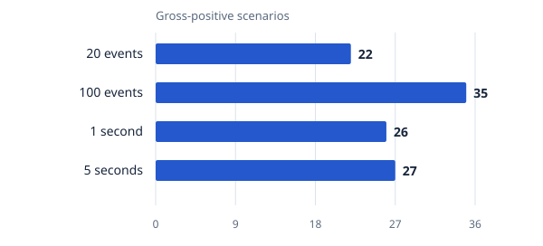
What this shows. At least 22 of 36 scenarios are gross-positive at each horizon, and 35 of 36 at the 100-event horizon. This is one four-hour exploratory capture, not a test of live profitability or cross-day reliability.
View exact values & source
| Horizon | Gross-positive scenarios | Total scenarios |
|---|---|---|
| 20 events | 22 | 36 |
| 100 events | 35 | 36 |
| 1 second | 26 | 36 |
| 5 seconds | 27 | 36 |
Source: assets/data/microstructure_backtest_reference.json
Download figure (SVG)
Shrinkage mean beats every learned timing model on OOS R²
Out-of-sample R² vs unpooled own mean (%) · 801,536 country-factor-months

What this shows. Against the unpooled own mean, every model achieves positive OOS R² (+0.83% to +1.16%), but the non-timing regional shrinkage mean alone reaches +1.20% (t = 9.05). Measured against the shrinkage mean, all learned models have negative OOS R².
View exact values & source
| Model / scope | OOS R² vs own mean (%) | OOS R² vs shrinkage (%) | Net Sharpe (20 bp) |
|---|---|---|---|
| Shrinkage mean | 1.2025 | 0.0 | 1.9054 |
| Elastic net (EM) | 1.157 | -0.0461 | 1.1121 |
| OLS (EM) | 1.1483 | -0.0549 | 1.0665 |
| GBRT (pooled) | 1.0959 | -0.1079 | 1.1682 |
| GBRT (EM) | 0.9928 | -0.2123 | 1.2648 |
| GBRT (DM → EM) | 0.9726 | -0.2327 | 1.1253 |
| Neural net (EM) | 0.8316 | -0.3755 | 1.0691 |
| Own mean | 0.0 | -1.2172 | 1.4127 |
Source: EMFactorTiming/reports/jkp_em/r2_oos.csv
Download figure (SVG)Shrinkage-mean tilt leads net Sharpe after turnover costs
Annualized Sharpe ratio net of 20 bp turnover cost · 2000–2025 OOS
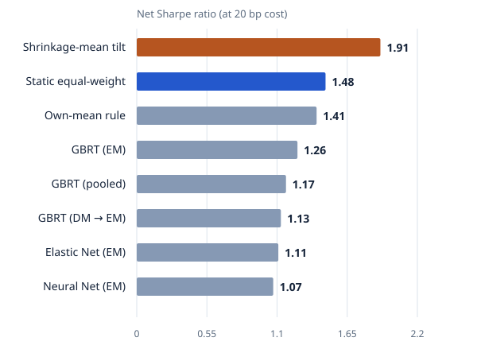
What this shows. Because learned timing rules turn over 41%–61% per month versus 6.1% for the shrinkage-mean tilt, the shrinkage-mean portfolio achieves the highest net Sharpe (1.91) ahead of static equal weight (1.48) and GBRT (1.26).
View exact values & source
| Portfolio rule | Net Sharpe (20 bp) | Monthly turnover |
|---|---|---|
| Shrinkage-mean tilt | 1.91 | 0.061 |
| Static equal-weight | 1.48 | 0.018 |
| Own-mean rule | 1.41 | 0.073 |
| GBRT (EM) | 1.26 | 0.479 |
| GBRT (pooled) | 1.17 | 0.552 |
| GBRT (DM → EM) | 1.13 | 0.611 |
| Elastic Net (EM) | 1.11 | 0.412 |
| Neural Net (EM) | 1.07 | 0.446 |
Source: EMFactorTiming/reports/jkp_em/portfolios.csv
Download figure (SVG)
Illiquidity, volatility, and reversal survive price-level controls
Out-of-sample price-neutral rank IC · 54 five-day periods across 4,000 markets
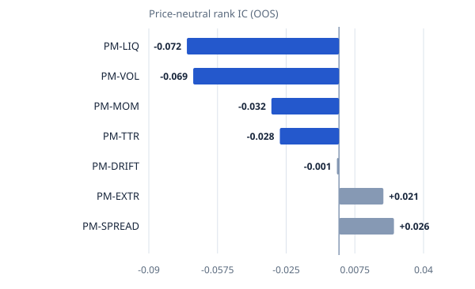
What this shows. After residualizing on [1, p, p²], illiquidity (PM-LIQ, IC = −0.072), low volatility (PM-VOL, −0.069), 30-day reversal (PM-MOM, −0.032), and time-to-resolution (PM-TTR, −0.028) remain statistically significant out of sample.
View exact values & source
| Factor | Price-neutral IC (OOS) | Raw Δp IC (OOS) | Interpretation |
|---|---|---|---|
| PM-LIQ | -0.072 | -0.06 | genuine illiquidity discount (t = −8.2) |
| PM-VOL | -0.069 | -0.067 | genuine low-volatility premium (t = −6.7) |
| PM-MOM | -0.032 | -0.054 | genuine 30d reversal (t = −3.4) |
| PM-TTR | -0.028 | -0.007 | time to resolution (t = −3.5) |
| PM-DRIFT | -0.001 | -0.014 | artifact (collapses to zero) |
| PM-EXTR | 0.021 | 0.044 | mostly price-level structure |
| PM-SPREAD | 0.026 | 0.047 | mostly price-level structure |
Source: PolymarketFactors/reports/expanded_factor_summary.csv
Download figure (SVG)
Five backtest artifacts inflate naive momentum IC eightfold
30-day momentum raw IC across progressive artifact-removal stages
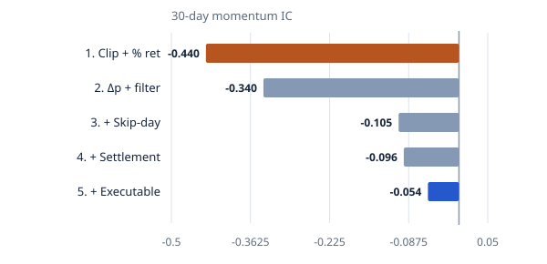
What this shows. Percentage returns near zero, extreme price bounds, same-bar bounce, pre-settlement drift, and stale non-executable quotes inflate the apparent 30-day reversal IC from −0.440 to −0.054 raw (−0.032 price-neutral).
View exact values & source
| Cleaning stage | Raw IC | Price-neutral IC |
|---|---|---|
| 1. Clip + % ret | -0.44 | — |
| 2. Δp + filter | -0.34 | — |
| 3. + Skip-day | -0.105 | -0.076 |
| 4. + Settlement | -0.096 | -0.071 |
| 5. + Executable | -0.054 | -0.032 |
Source: PolymarketFactors/reports/artifact_funnel.csv
Download figure (SVG)
Funding, retail positioning, and low-price range transfer to crypto
730-day daily quintile long–short Sharpe as published (costs effectively ~2.5 bp/side, not 5) · 105 coins

What this shows. Low-price range (+1.63), funding-rate contrarian carry (+1.42), and retail long/short positioning (+1.39) hold up across the 730-day Binance panel and OKX cross-validation, while cross-sectional momentum (−0.38) fails to transfer. The cost formula behind these published Sharpes charged about 2.5 bp per side instead of the stated 5 bp; read them as upper bounds until the rerun.
View exact values & source
| Factor | 730-day L/S Sharpe | Audit verdict |
|---|---|---|
| Low-price range | 1.63 | robust (bear-market defensive; OKX confirmed) |
| Funding rate | 1.42 | strongest (91% rolling windows > 0; OKX confirmed) |
| Retail L/S ratio | 1.39 | robust across halves (+11.8% post-pub) |
| Large taker buys | 0.73 | low confidence (parameter-fragile) |
| Ideal reversal | 0.25 | low confidence (parameter-fragile) |
| Cross-sect. mom. | -0.38 | does not transfer (both halves negative) |
| Top-trader ratio | -1.36 | contrarian (following top traders loses) |
Source: CryptoFactors/reports/factor_transfer_summary.csv
Download figure (SVG)Post-publication out-of-sample windows include both gains and drawdowns
Frozen 3-factor composite return (%) across 92 post-publication days (Jun–Aug 2026)

What this shows. Tracked out of sample without re-fitting after the May 2026 cutoff, the equal-weight composite gained +4.57% in June 2026 before losing −6.93% in July and −3.97% in August (−6.55% cumulative), underscoring regime sensitivity.
View exact values & source
| Post-publication window | Net return (%) | Max drawdown (%) |
|---|---|---|
| June 2026 (30d) | 4.57 | -2.0 |
| July 2026 (31d) | -6.93 | -5.6 |
| August 2026 (31d) | -3.97 | -5.4 |
| Jun–Aug total (92d) | -6.55 | -11.9 |
Source: CryptoFactors/reports/postpub_composite_summary.csv
Download figure (SVG)Explore metrics and individual scenarios
Loading the bounded scenario summary…
Research reference only. One four-hour capture, simulated market orders, adjacent pseudo-heldout phases, and no profitability or capacity claim.
Loading published evidence…
The learner improves on the naïve baseline but not on the oracle benchmark.
Read chart as a table
Can a model identify who benefits most?
Compare held-out effects with known truth and a constant oracle.
RMSE is 0.0417 versus 0.0247 for the oracle; no HTE claim is made.
Semi-synthetic; not a live-market effect.
Chart → artifact → pinned revision → sourcehte_recovery.json
| Path | Kind | Size |
|---|
No paths match this view.
Semi-synthetic; not a live-market effect.
Chart values are bundled from the named, versioned research artifact.
No account, hidden state, or private data is required to inspect this release.